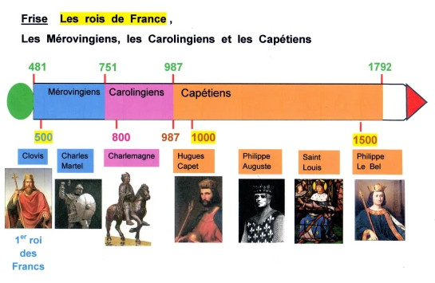

Романизация – распространение латинского языка и римской культуры на завоеванных Римом территориях, ставших римскими провинциями.
III-II в. до н.э. – первый этап романизации. Присоединение к Риму Цизальпийской Галлии (совр.Франция, Швейцария), позднее и Трансальпийской Галлии (совр.Сев.Италия), основание Нарбоннской провинции (Прованс).
58-51 гг. – второе римское завоевание. Романизация остальной части Галлии.
Германизация Галлии (V-VIII вв)
Конец V в. – образование первого франкского государства. Династия Меровингов.
768-814 гг. - правление Карла Великого.
842 г. – Страсбургские присяги
843 г. – Верденский договор. Раздел империи Карла Великого
877 г. – окончательное разрушение империи Карла Великого
Проблемы курса истории языка
Внешняя и внутренняя история языка
Внешняя история языка — часть общей духовной и культурной истории определенного языкового сообщества

Внутренняя история языка = историческая лингвистика: историческая фонетика, историческая грамматика (морфология и синтаксис) и историческая лексикология
Проблема периодизации французского языка
Предыстория французского языка
Период романизации на территории Галлии (I в. до н.э. — V в. н.э.).